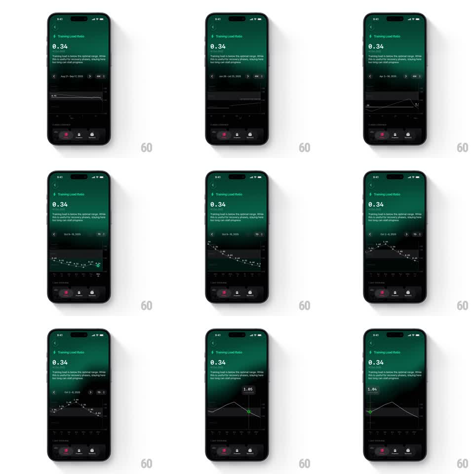

Media
Frame-by-frame

Rebuild this interaction 1:1: The Outsiders' training load graph - the date-range chevrons slide the line graph horizontally between ranges, the range dropdown switches views (7 days / 4 weeks / 6 months), and scrubbing plants an orange dot with a live value tooltip.

Rebuild this interaction 1:1: The Outsiders' training load graph - the date-range chevrons slide the line graph horizontally between ranges, the range dropdown switches views (7 days / 4 weeks / 6 months), and scrubbing plants an orange dot with a live value tooltip.
## Integration
Integration: stack-agnostic spec - springs given as stiffness/damping, timed motions as duration + curve; map every value to your framework and animation library of choice.
## Scene
Dark green "Training Load Ratio" screen: big "0.34" with "BELOW RANGE", explainer copy, a range bar with chevrons and the current range ("Sep 16 - Oct 15, 2025"), a white line graph with gridlines and an average marker, and the bottom tab bar. Scrub state: orange dot on the line with a pill tooltip (1.34). Dropdown state: a menu with 7 days / 4 weeks / 6 months.
## Motion spec
Pattern: paged graph with scrub tooltip, ~350ms transitions.
- Page: tapping a chevron slides the graph sideways (300ms, ease-out) - the old range exits as the new one enters from the chevron's side; the range label crossfades (150ms).
- Dropdown: the menu scales open from the range bar (200ms, ease-out); picking a view redraws the graph with a y-interpolation morph (350ms).
- Scrub: touching the graph plants the orange dot on the nearest sample; dragging tracks 1:1, the tooltip pill riding above the dot and updating per sample (value like 1.34), clamping at edges.
- Exit: lifting the finger fades the dot and pill (200ms).
## Calibration
- The average marker line stays visible across paging and scrub.
- Tooltip values snap to actual samples, never interpolated positions.
## Reduced motion
Graph crossfades between ranges (200ms); tooltip appears at tap.
## Don't miss
- The graph slides horizontally on paging - it never crossfades in place.
- The scrub dot is orange even though every other accent on screen is green.